|
|
|
| Version | Unicode 3.1.0 |
| Authors | Mark Davis, Michael Everson, Asmus Freytag, John H. Jenkins and other members of the editorial committee |
| Date | 2001-05-16 |
| This Version | http://www.unicode.org/unicode/reports/tr27/tr27-4.html |
| Previous Version | http://www.unicode.org/unicode/reports/tr27/tr27-3.html |
| Latest Version | http://www.unicode.org/unicode/reports/tr27 |
| Tracking Number | 4 |
This document defines Version 3.1 of the Unicode Standard. It overrides certain features of Unicode 3.0.1, and adds a large number of coded characters.
This document has been reviewed by Unicode members and other interested parties, and has been approved by the Unicode Technical Committee as a Unicode Standard Annex. It is a stable document and may be used as reference material or cited as a normative reference from another document.
A Unicode Standard Annex (UAX) forms an integral part of the Unicode Standard, carrying the same version number, but is published as a separate document. Note that conformance to a version of the Unicode Standard includes conformance to its Unicode Standard Annexes.
A list of current Unicode Technical Reports is found on http://www.unicode.org/unicode/reports/. For more information about versions of the Unicode Standard, see http://www.unicode.org/unicode/standard/versions/.
The References provide related information that is useful in understanding this document. Please mail corrigenda and other comments to the author(s).
Unicode 3.1 is a minor version of the Unicode Standard. It overrides certain features of Unicode 3.0.1, and adds a large number of coded characters.
The Unicode Standard, Version 3.1 is defined by the following list. The version numbering and the role of each component are explained in Versions of The Unicode Standard. The symbols in the change status column are explained in the key below. A summary of modifications in the Unicode Character Database for this version can be found in UnicodeCharacterDatabase-3.1.html, together with a list of which data files contain normative vs. informative data.
N New in this release D Data change (possibly also format/text change) F Data format change (possibly also text change) T Text annotation change - Unchanged
The primary feature of Unicode 3.1 is the addition of 44,946 new encoded characters. These characters cover several historic scripts, several sets of symbols, and a very large collection of additional CJK ideographs.
For the first time, characters are encoded beyond the original 16-bit codespace or Basic Multilingual Plane (BMP or Plane 0). These new characters, encoded at code positions of U+10000 or higher, are synchronized with the forthcoming standard ISO/IEC 10646-2. For further information, see Article IX, Relation to 10646. Unicode 3.1 and 10646-2 define three new supplementary planes:
The Supplementary Multilingual Plane, or Plane 1, contains several historic scripts, and several sets of symbols: Old Italic, Gothic, Deseret, Byzantine Musical Symbols, (Western) Musical Symbols, and Mathematical Alphanumeric Symbols. Together these comprise 1594 newly encoded characters.
The Supplementary Ideographic Plane, or Plane 2, contains a very large collection of additional unified Han ideographs known as Vertical Extension B, comprising 42,711 characters, as well as 542 additional CJK Compatibility ideographs.
The Supplementary Special-purpose Plane, or Plane 14, contains a set of tag characters, 97 in all.
Complete introductions to the newly encoded scripts, symbols, and new additions to Han ideographs can be found in Article V, Block Descriptions, below.
In addition, Unicode 3.1 adds two mathematical symbols in the BMP:
U+03F4 GREEK CAPITAL THETA SYMBOL
U+03F5 GREEK LUNATE EPSILON SYMBOL
These two characters are not part of ISO/IEC 10646-2, but are among the additions in the forthcoming Amendment 1 to ISO/IEC 10646-1:2000. They are included in Unicode 3.1 so that decompositions for the Mathematical Alphanumeric Symbols can be internally consistent.
Counting the additions to the three supplementary planes and the two characters on the BMP, Unicode 3.1 adds 44,946 new encoded characters. Together with the 49,194 already existing characters in Unicode 3.0, that comes to a grand total of 94,140 encoded characters in Unicode 3.1.
Of those 94,140 characters, 70,207 are unified Han ideographs, and an additional 832 are CJK Compatibility ideographs -- slightly more than 75% of the encoded characters in the standard.
In addition, 32 more code points have been allocated as noncharacters. For more information, see Article III, Conformance.
See Article VI, Code Charts, for links to online charts of the new characters for Unicode 3.1.
Unicode 3.1 also features amended contributory data files, to bring the data files up to date against the much expanded repertoire of characters. A summary of the new data files and changes to old data files can be found in Article VIII, Unicode Character Database Changes. A complete specification of the contributory data files constituting the Unicode Standard, Version 3.1 can be found in Enumerated Versions.
All errata and corrigenda to Unicode 3.0 and Unicode 3.0.1 are included in this specification. Major corrigenda and other changes having a bearing on conformance to the standard are listed in Article III, Conformance. Other minor errata are listed in Article VII, Errata.
Most notable among the corrigenda to the standard is a tightening of the definition of UTF-8, to eliminate a possible security issue with non-shortest-form UTF-8.
The sections of this document are referred to as "articles" to prevent confusion with references to sections of The Unicode Standard, Version 3.0. In addition, the articles in this document are numbered with Roman numerals, to highlight the distinction. The word "section" always refers to sections of The Unicode Standard, Version 3.0. Page numbers also refer to The Unicode Standard, Version 3.0.
New or replacement text for the standard is indicated with underlined text, when this new text is a corrigendum of an existing section of the standard.
Deleted text from the standard is indicated with struck-through
text.
In instances where entire new sections or subsections are to be added to the standard, as for the block descriptions for newly encoded scripts or symbol sets, new section numbers are provided that interleave reasonably with the existing sections of the published Unicode 3.0 book. And for these added sections, the text is not underlined, since the entire sections are new.
In this document, unambiguous dates of the current common era, such as 1999, are unlabeled. In cases of ambiguity, CE is used. Dates before the common era are labeled with BCE.
Some of the characters in Article 5, Block Descriptions, are Greek and may not be displayed by all browsers. For assistance, see Display Problems.
Section 0.2 Notational Conventions, page xxviii: change the description of the U+ notation to read:
In running text, an individual Unicode code point can be expressed as U+n, where n is from four to six hexadecimal digits, using the digits 0-9 and A-F (for 10 through 15, respectively). There should be no leading zeros, unless the codepoint would have fewer than four hexadecimal digits; for example, U+0001, U+0012, U+0123, U+1234, U+12345, U+102345.
Section 0.2 Notational Conventions, page xxviii: replace the paragraph starting "A sequence of characters" with the following text:
A sequence of two or more code points may be represented by a comma-delimited list, set off by angle brackets. For this purpose angle brackets consist of U+003C LESS-THAN SIGN and U+003E GREATER-THAN SIGN. Spaces are optional after the comma, and U+ notation for the code point is also optional. A sequence identified with this notation is called a Unicode Sequence Identifier (USI).
When the usage is clear from the context, a sequence of characters may also be represented with generic short names, for example as in "<a, grave>", or the angle brackets may be omitted.
In contrast to sequences of code points, a sequence of one or more code units may be represented by a list set off by angle brackets, but without comma delimitation or U+ notation. For example, the notation "<nn nn nn nn>" represents a sequence of bytes, as for the UTF-8 encoding form of a Unicode character. The notation "<nnnn nnnn>" represents a sequence of 16-bit code units, as for the UTF-16 encoding form of a Unicode character. In the text, the angle brackets are occasionally omitted from this notation when the usage is clear in context.
In other environments, such as programming languages or mark-up, alternative notation for sequences of code points or code units may be used.
On page xxvii, in the section, "The Unicode Character Database and Technical Reports," the paragraph beginning, "The following Unicode Technical Reports..." is updated to read as follows:
The following Unicode
Technical ReportsStandard Annexes are formally part of this standard:
- UAX #9: The Bidirectional Algorithm, Version 3.1.0
UTRUAX #11: East Asian Width, Version5.03.1.0UTRUAX #13: Unicode Newline Guidelines, Version5.03.1.0UTRUAX #14: Line Breaking Properties, Version6.03.1.0UTRUAX #15: Unicode Normalization Forms, Version18.03.1.0- UAX #19: UTF-32, Version 3.1.0
There are three major changes to the conformance clauses of the Unicode Standard for Version 3.1. The first of these is the addition of new noncharacters and a clarification regarding noncharacter status. The second is a major corrigendum to the definition of UTF-8 to address security issues. The third change is that UTF-32 is now part of the standard. There are additional normative changes in Unicode 3.1 that have implications for conformance. These are described in Article VIII, Unicode Character Database Changes, and in Section 13.2 Layout Controls of Article V, Block Descriptions.
In Section 3.1, Conformance Requirements on page 37, add the following paragraph immediately after the first paragraph and before the subsection, "Byte Ordering":
Each version of the Unicode Standard, once published, is absolutely stable and will never change. Implementations or specifications that refer to a specific version of the Unicode Standard can rely upon this stability. If future versions of these implementations or specifications upgrade to a future version of the Unicode Standard, then some changes may be necessary.
To clarify the interpretation of Unicode code units in the context of the transformation formats, conformance clause C1 has been reworded:
C1 A process shall interpret the Unicode code values as 16-bit quantitiesunits in accordance with the Unicode Transformation Format used.
Unicode values can be stored in native 16-bit machine words.- The Unicode Standard defines code points (scalar values) that can be encoded in any of three transformation formats (encoding forms): UTF-8, UTF-16, or UTF-32.
- For information on the use of wchar_t or other programming language types to represent Unicode
valuescode units, see Section 5.2, ANSI/ISO C wchar_t.
There are 34 specific code points in Unicode 3.0 that are characterized as noncharacters. Unicode 3.1 adds an additional 32 noncharacters. To clarify the status of all 66, a definition (page 41) is added, and conformance rules C5 and C10 (pages 38, 39) are amended as follows:
D7b Noncharacter: a code point that is permanently reserved for internal use, and that should never be interchanged. In Unicode 3.1, these consist of the values U+nFFFE and U+nFFFF (where n is from 0 to 1016) and the values U+FDD0..U+FDEF.
- For more information, see the discussions under "Special Noncharacter Values" in Section 2.7, Special Character and Noncharacter Values, and under "Noncharacters" in Section 13.6, Specials.
- These code points are permanently reserved as noncharacters. In the future, it is possible that additional code points may be specified to represent noncharacters.
C5 A process shall not interpret either U+FFFE or U+FFFFa noncharacter code point as an abstract character.
- The code points may be used internally, such as for sentinel values or delimiters, but should not be exchanged publicly.
C10 A process shall make no change in a valid coded character representation other than the possible replacement of character sequences by their canonical-equivalent sequences or the deletion of noncharacter code points, if that process purports not to modify the interpretation of that coded character sequence.
- If a noncharacter which does not have a specific internal use is unexpectedly encountered in processing, an implementation may signal an error or delete or ignore the noncharacter. If these options are not taken, the noncharacter should be treated as an unassigned code point. For example, an API that returned a character property value for a noncharacter would return the same value as the default value for an unassigned code point.
The current conformance clause C12 in The Unicode Standard, Version 3.0 forbids the generation of "non-shortest form" UTF-8, and forbids the interpretation of illegal sequences, but not the interpretation of "non-shortest form". Where software does interpret the non-shortest forms, security issues can arise. For example:
To address this issue, the Unicode Technical Committee has modified the definition of UTF-8 to forbid conformant implementations from interpreting non-shortest forms for BMP characters, and clarified some of the conformance clauses.
These modifications make use of updated notation: see the Glossary for any unfamiliar terms.
Change C12 to the following:
| C12 | (a) When a process generates data in a
Unicode Transformation Format, it shall not emit ill-formed (b) When a process interprets data in a Unicode Transformation Format, it shall treat illegal (c) A conformant process shall not interpret illegal UTF code unit sequences as characters. (d) Irregular UTF code unit sequences shall not be used for encoding any other information. |
Add the following notes after C12:
For example, UTF-8 allows nonshortest code value sequences to be interpreted: a UTF-8 conformant process may map the code value sequence C0 80 (110000002 100000002) to the Unicode value U+0000, even though a UTF-8 conformant process shall never generate that code value sequence -- it shall generate the sequence 00 (000000002) instead.
Modify D36 as follows, and add a note:
| D36 | (a) UTF-8 is the Unicode Transformation
Format that serializes a Unicode code point as a sequence of one to four
bytes, as specified in Table 3.1, UTF-8 Bit Distribution. (b) An illegal UTF-8 code unit sequence is any byte sequence that does not match the patterns listed in Table 3.1B, Legal UTF-8 Byte Sequences. (c) An irregular UTF-8 code unit sequence is a six-byte sequence where the first three bytes correspond to a high surrogate, and the next three bytes correspond to a low surrogate. As a consequence of C12, these irregular UTF-8 sequences shall not be generated by a conformant process. |
Retain the paragraph and table immediately below D36, but replace the last sentence in the paragraph.
Table 3.1 specifies the bit distribution from a Unicode character (or surrogate pair) into the one- to four-byte values of the corresponding UTF-8 sequence. Note that the four-byte form for surrogate pairs involves an addition of 1000016, to account for the starting offset to the encoded values referenced by surrogates. For a discussion of the difference in the formulation of UTF-8 in ISO/IEC 10646, see Section C.3, UCS Transformation Formats.
The definition of UTF-8 in Annex D of ISO/IEC 10646-1:2000 also allows for the use of five- and six-byte sequences to encode characters that are outside the range of the Unicode character set; those five- and six-byte sequences are illegal for the use of UTF-8 as a transformation of Unicode characters.
Table 3.1. UTF-8 Bit Distribution Scalar Value UTF-16 1st Byte 2nd Byte 3rd Byte 4th Byte 00000000 0xxxxxxx00000000 0xxxxxxx0xxxxxxx00000yyy yyxxxxxx00000yyy yyxxxxxx110yyyyy10xxxxxxzzzzyyyy yyxxxxxxzzzzyyyy yyxxxxxx1110zzzz10yyyyyy10xxxxxx000uuuuu zzzzyyyy
yyxxxxxx110110ww wwzzzzyy
110111yy yyxxxxxx11110uuu10uuzzzz10yyyyyy10xxxxxx
- Where uuuuu = wwww + 1 (to account for addition of 1000016 as in Section 3.7, Surrogates).
Delete the two text paragraphs after Table 3.1. (The relevant portions have been elevated into definitions or conformance clauses.)
When converting a Unicode scalar value to UTF-8, the shortest form that can represent those values shall be used. This practice preserves uniqueness of encoding. For example, the Unicode binary value <0000000000000001> is encoded as <00000001>, not as <11000000 10000001>. The latter is an example of an irregular UTF-8 byte sequence. Irregular UTF-8 sequences shall not be used for encoding any other information.
When converting from UTF-8 to a Unicode scalar value, implementations do not need to check that the shortest encoding is being used. This simplifies the conversion algorithm.
Replace them by the following table and text:
Table 3.1B. Legal UTF-8 Byte Sequences Code Points 1st Byte 2nd Byte 3rd Byte 4th Byte U+0000..U+007F 00..7F U+0080..U+07FF C2..DF 80..BF U+0800..U+0FFF E0 A0..BF 80..BF U+1000..U+FFFF E1..EF 80..BF 80..BF U+10000..U+3FFFF F0 90..BF 80..BF 80..BF U+40000..U+FFFFF F1..F3 80..BF 80..BF 80..BF U+100000..U+10FFFF F4 80..8F 80..BF 80..BF
Table 3.1B. lists all of the byte sequences that are legal in UTF-8. A range of byte values such as A0..BF indicates that any byte from A0 to BF (inclusive) is legal in that position. Any byte value outside of the ranges listed is illegal. For example, the byte sequence <C0 AF> is illegal since C0 is not legal in the 1st Byte column. The byte sequence <E0 9F 80> is illegal since in the row where E0 is legal as a first byte, 9F is not legal as a second byte. The byte sequence <F4 80 83 92> is legal, since every byte in that sequence matches a byte range in a row of the table (the last row).
Add to Appendix C: Relationship to ISO/IEC 10646, Section C.3: UCS Transformation Formats, at the end of the subsection UTF-8:
The definition of UTF-8 in Annex D of ISO/IEC 10646-1:2000 also allows for the use of five- and six-byte sequences to encode characters that are outside the range of the Unicode character set; those five- and six-byte sequences are illegal for the use of UTF-8 as a transformation of Unicode characters. ISO/IEC 10646 does not allow mapping of unpaired surrogates, nor U+FFFE and U+FFFF (but it does allow other noncharacters).
Unicode Technical Report #19, UTF-32, has been elevated to the status of a Unicode Standard Annex, making UTF-32 officially a part of the Unicode Standard. UAX #19 adds specific definition clauses to Section 3.8, Transformations, of The Unicode Standard, Version 3.0. See UAX #19 for the exact definitions of UTF-32 as well as a discussion of the relation of UTF-32 to ISO/IEC 10646 and UCS-4.
With the addition of UTF-32, the Unicode Standard now has three sanctioned encoding forms: UTF-8, UTF-16, and UTF-32. These are the 8-bit, 16-bit, and 32-bit forms, respectively, for representing the Unicode scalar values in particular implementations of the standard.
Considerations of byte-order serialization lead to a further subdivision of the encoding forms into 5 sanctioned encoding schemes for the Unicode Standard: UTF-8, UTF-16BE, UTF-16LE, UTF-32BE, and UTF-32LE.
Because UTF-32 is a fixed-width, 32-bit encoding form, the numerical value of a Unicode character in UTF-32 is always precisely identical to the Unicode scalar value.
The encoding scheme UTF-32BE (UTF-32 serialized as bytes in most significant byte first order) is structurally the same as UCS-4, as defined in ISO/IEC 10646-1:2000.
See also Unicode Technical Report #17, Character Encoding Model, for a discussion of the general framework for understanding the Unicode character encoding and its relationship to the Unicode Transformation Formats.
Add the following entry to the end of the special character properties listing, on page 50:
1D173 MUSICAL SYMBOL BEGIN BEAM
1D174 MUSICAL SYMBOL END BEAM
1D175 MUSICAL SYMBOL BEGIN TIE
1D176 MUSICAL SYMBOL END TIE
1D177 MUSICAL SYMBOL BEGIN SLUR
1D178 MUSICAL SYMBOL END SLUR
1D179 MUSICAL SYMBOL BEGIN PHRASE
1D17A MUSICAL SYMBOL END PHRASE
All of the General Category values plus the case mappings in UnicodeData.txt and SpecialCasing.txt are now normative. The case mapping row from Table 4-2, Informative Character Properties, page 74 is moved to Table 4-1, Normative Character Properties. The word "informative" is struck from Table 4-5, General Category, page 88. The header of Section 4.5, General Category--Normative in Part, page 87 is changed to Section 4.5, General Category--Normative. The other textual changes in Chapter 4 resulting from this change in status are not detailed here.
On page 73, make the following changes:
Normative Properties. Normative means that implementations that claim conformance to the Unicode Standard (at a particular version) and that make use of a particular property must follow the specifications of the standard for that property to be conformant.
Thus, for example, the Bidirectional Character Type is required for conformance whenever displaying bidirectional text, such as Arabic or Hebrew. The term normative when applied to a character property does not mean that the value of the property will never change. Corrections and extensions to the standard in the future may require minor changes to normative values, even though the Unicode Technical Committee strives to minimize such changes.Informative Properties. If a character property is only informative, a conformant implementation is free to use or change such values as it may require, while still remaining conformant to the standard. However, their use is strongly recommended. Particular implementations may choose to override the properties that are not normative. In that case, the implementer has the option of establishing a protocol to convey that information.
Normative References. Other specifications may choose to make normative references to Unicode character properties irrespective of their status as normative or informative in the Unicode Standard.
On page 102, add the following at the bottom of the page:
Identifier Stability. Unicode General Category values are kept as stable as possible, but they may change in ways that affect identifiers in new versions (See Unicode Policies for more information.) When another standard or product upgrades to a new version of the Unicode Standard, it may have to handle characters that were formerly part of ID_Start or ID_Continue, but are no longer.
This situation can be handled by having two explicit backwards compatibility lists: ID_Start_Supplement and ID_Continue_Supplement. The implementation's specification of identifiers would include the union of the respective Unicode properties and those supplement lists.
UAX #9 supersedes the text in Section 3.12, Bidirectional Behavior, in The Unicode Standard, Version 3.0. There are minor, non-normative textual revisions to the text of UAX #9 for Unicode 3.1.
In a corrigendum to UAX #15, U+FB1D YOD WITH HIRIQ has been added to the Composition Exclusion List. For more information, see UAX #15.
The following text amends portions of Chapter 5, Implementation Guidelines in The Unicode Standard, Version 3.0.
Section 5.2, ANSI/ISO C wchar_t, pages 107-108, the text is amended with the following additions and deletions.
With the wchar_t wide character type, ANSI/ISO C provides for the inclusion of fixed-width, wide characters. ANSI/ISO C leaves the semantics of the wide character set to the specific implementation but requires that the characters from the portable C execution set correspond to their wide character equivalents by zero extension. The Unicode characters in the ASCII range U+0020 to U+007E satisfy these conditions. Thus, if an implementation uses ASCII to code the portable C execution set, the use of the Unicode character set for the wchar_t type,with a width of 16 bitsin either UTF-16 or UTF-32 form, fulfills the requirement.
The width of wchar_t is compiler-specific and can be as little as 8 bits. Consequently, programs that need to be portable across any C or C++ compiler should not use wchar_t for storing Unicode text. The wchar_t type is intended for storing compiler-defined wide characters, which may be Unicode characters in some compilers. However,someprogrammers who want a UTF-16 implementation can use a macro or typedef (for example, UNICHAR) that can be compiled as unsigned short or wchar_t depending on the target compiler and platform. Other programmers who want a UTF-32 implementation can use a macro or typedef which might be compiled as unsigned int or wchar_t, depending on the target compiler and platform. This choice enables correct compilation on different platforms and compilers. Where a 16-bit implementation of wchar_t is guaranteed, such macros or typedefs may be predefined (for example, WCHAR on Win32 API).
On systems where the native character type or wchar_t is implemented as a 32-bit quantity, an implementation may use the UTF-32 formtransiently use 32-bit quantitiesto represent Unicode characters.during processing. The internal workings of this representation are treated as a black box and are not Unicode-conformant. In particular, any API or runtime library interfaces that accept strings of 32-bit characters are not Unicode-conformant. If such an implementation interchanges 16-bit Unicode characters with the outside world, then this interchange can be conformant as long as the interface for this interchange complies with the requirements of Chapter 3, Conformance.
A limitation of the ISO/ANSI C model is its assumption that characters can always be processed in isolation. Implementations that choose to go beyond the ISO/ANSI C model may find it useful to mix widths within their APIs. For example, an implementation may have a 32-bit wchar_t and process strings in any of UTF-8, UTF-16 or UTF-32 forms. Another implementation may have a 16-bit wchar_t and process strings as UTF-8 or UTF-16, but have additional APIs that process individual characters as UTF-32, or deal with pairs of UTF-16 code units.
Section 5.3, Unknown and Missing Characters: Unassigned and Private Use Character Codes, pages 108-109: add the following to the end of the subsection.
In practice, applications must deal with unassigned code points or unknown private use characters. This may occur, for example, when the application is handling text that originated on a system implementing a later release of Unicode, with additional assigned characters. To work properly in implementations, unassigned code points must be given default properties as if they were characters, since various algorithms require properties to be assigned to every character in order to function at all. These properties are not uniform across all unassigned code points, since certain ranges of code points need different properties to maximize compatibility.
Normally, code points outside the repertoire of supported characters would be displayed with a fall-back glyph, such as a black box. However, format and control characters must not have visible glyphs (although they may have an effect on other characters in display). These characters are also ignored except with respect to specific, defined processes: for example, ZERO WIDTH NON-JOINER is ignored in collation. To allow a greater degree of compatibility across versions of the standard, the ranges U+2060..U+206F, U+FFF0..U+FFFC, and U+E0000..U+E0FFF are reserved for format and control characters (General Category = Cf). Unassigned code points in these ranges should be ignored in processing and display.
The Unicode Bidirectional Algorithm assigns a Bidirectional Category to unassigned code points based on the expected direction of characters to be added in the future. For more information, see Bidirectional Character Types in Unicode Standard Annex #9: The Bidirectional Algorithm.
Unicode Standard Annex #14: Line Breaking Properties supplies the property "XX" for all unassigned code points in Definitions.
In determining character widths for East Asian display, Unicode Standard Annex #11: East Asian Width includes a section on Unassigned and Private Use characters.
In Unicode Standard Annex #15, Unicode Normalization Forms, unassigned code points are given the Canonical Combining Class = 0, and no decomposition mapping.
Section 5.16, Identifiers: Specific Character Additions, page 134: the subsection name is changed to Specific Character Adjustments, and the following note is added:
Note: a useful set of characters to consider for exclusion from identifiers consists of all characters whose compatibility mappings have a
<font>tag.
Section 5.11, Language Tagging in Plain Text, page 114: delete the following paragraph:
For interchange purposes, it is becoming common to use tagged information, which is embedded in the text. Unicode Technical Report #7, "Plane 14 Characters for Language Tags," which is found on the CD-ROM or in its up-to-date version on the Unicode Web site, provides a proposed mechanism for representing language tags. Like most tagging mechanisms, these language tags are stateful: a start tag establishes an attribute for the text, and an end tag concludes it.
The subsection Working with Language Tags, pages 114-115, has been moved to the newly created Section 13.7, Tag Characters, which is part of Article V, Block Descriptions. This is because its recommendations are specific to the tag characters described there.
Note: The numbering used here for block descriptions and revised text follows The Unicode Standard, Version 3.0 for ease of cross-reference.
Section 6.1, General Punctuation, Punctuation: U+0020-U+00BF, page 149: the following note is added:
Note: any of the characters U+002C, U+002E, U+060C, U+066B, or U+066C (and possibly others) can be used as numeric separator characters, depending on the locale and user customizations.
Section 6.1, General Punctuation, CJK Symbols and Punctuation: U+3000-U+303F, page 155: The first paragraph is updated as follows:
This block encodes punctuation marks and symbols used primarily by writing systems that employ Han ideographs. Some of the punctuation marks, in particular the brackets, are used in other typographic contexts as well. Most of these characters are found in East Asian standards.
Section 6.1 General Punctuation, CJK Symbols and Punctuation: U+3000-U+303F, page 155: add the following paragraph after the paragraph on "U+3006":
U+3008, U+3009 angle brackets have ambiguous width. They are wide in an East Asian context, but are narrow when used in other contexts, such as mathematics. There are other characters in this block that have the same characteristics, including double angle brackets, tortoise shell brackets, and white square brackets.
Note: The following text replaces the entire text of Section 7.5, Georgian, on page 173.
The Georgian script is used primarily for writing the Georgian language and its dialects. It is also used for the Svan and Mingrelian languages, and in the past was used for Abkhaz and other languages of the Caucasus.
Script Forms. The Georgian script originates from an inscriptional form called Asomtavruli, from which was derived a manuscript form called Nuskhuri. Together these forms are categorized as Khutsuri (ecclesiastical), but Khutsuri is not itself the name of a script form. Although no longer seen in most modern texts, the Nuskhuri style is still used for liturgical purposes. It was replaced, through a history now uncertain, by an alphabet called Mkhedruli (military), which is now the form used for nearly all modern Georgian writing.
Case Forms. The Georgian alphabet is fundamentally caseless, and is used as such in most texts. However, possibly owing to the influence of case forms in other alphabets, modern Georgian is occasionally written with uppercase capital letters. In this typographic departure, it is the Asomtavruli forms that serve to represent uppercase letters, while the lowercase is Mkhedruli or Nuskhuri. This usage parallels the evolution of the Latin alphabet, in which the original linear monumental style came to be considered uppercase, while manuscript styles of the same alphabet came to be represented as lowercase. The Unicode encoding of Georgian follows the Latin analogy: the range U+10A0..U+10CF is used to encode the uppercase capital forms (Asomtavruli), and the basic alphabetic range U+10D0..U+10FF may be regarded as lowercase (Mkhedruli or Nuskhuri). In lowercase (i.e. normal caseless) Georgian text, Mkhedruli or Nuskhuri are distinguished via font, as are regular and italic forms in Latin lowercase.
| Font style | "uppercase" U+10A0..U+10CF | basic/"lower" U+10D0..U+10FF |
|---|---|---|
| Secular | Asomtavruli | Mkhedruli |
| Ecclesiastical | Asomtavruli | Nuskhuri |
The figure below shows how the Georgian code chart would appear if presented in an ecclesiastical font:
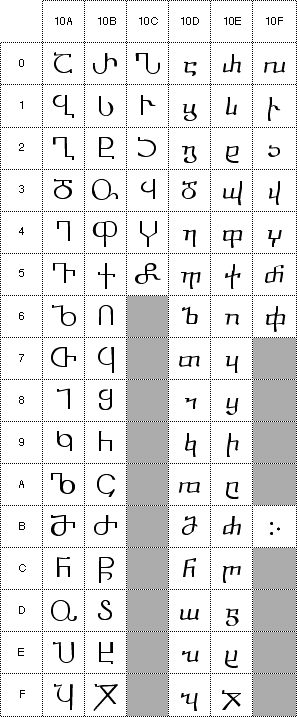
Because Georgian is predominantly used as a caseless alphabet, no default case mappings are provided for Georgian in the Unicode Character Database. It is inadvisable for generic Unicode text processing to convert Georgian Mkhedruli text to Asomtavruli via a casing operation. In instances where software dealing with Georgian text treats Asomtavruli forms as uppercase letters and requires case folding, this should be done via extended casing rules that constitute a higher-level protocol.
Georgian Paragraph Separator. The Georgian paragraph separator has a distinct representation, so it has been separately encoded as U+10FB. It visually marks a paragraph end, but it must be followed by a newline character as described in Unicode Standard Annex #13, Unicode Newline Guidelines, to cause a paragraph termination.
Other Punctuation. For the Georgian full stop, use U+0589 ARMENIAN FULL STOP or U+002E FULL STOP.
For additional punctuation to be used with this script, see C0 Controls and ASCII Punctuation (U+0000..U+007F) and General Punctuation (U+2000..U+206F).
The Old Italic script unifies a number of related historical alphabets located on the Italian peninsula. Some of these were used for non-Indo-European languages (Etruscan and probably North Picene), and some for various Indo-European languages belonging to the Italic branch (Faliscan and members of the Sabellian group, including Oscan, Umbrian, and South Picene). The ultimate source for the alphabets in ancient Italy is Euboean Greek used at Ischia and Cumae in the bay of Naples in the eighth century BCE. Unfortunately, no Greek abecedaries from southern Italy have survived. Faliscan, Oscan, Umbrian, North Picene, and South Picene all derive from an Etruscan form of the alphabet.
There are some 10,000 inscriptions in Etruscan. By the time of the earliest Etruscan inscriptions, circa 700 BCE, local distinctions are already found in the use of the alphabet. Three major stylistic divisions are identified: the Northern, Southern, and Caere/Veii. Use of Etruscan can be divided into two stages, owing largely to the phonological changes that occurred: the "archaic Etruscan alphabet", used from the seventh to the fifth centuries BCE, and the "neo-Etruscan alphabet", used from the fourth to the first centuries BCE. Glyphs for eight of the letters differ between the two periods; additionally, neo-Etruscan abandoned the letters KA, KU, and EKS.
The unification of these alphabets into a single Old Italic script requires language-specific fonts because the glyphs most commonly used may differ somewhat depending on the language being represented.
Most of the languages have added characters to the common repertoire: Etruscan and Faliscan add LETTER EF; Oscan adds LETTER EF, LETTER II, and LETTER UU; Umbrian adds LETTER EF, LETTER ERS, and LETTER CHE; North Picene adds LETTER UU; and Adriatic adds LETTER II and LETTER UU.
The Latin script itself derives from a south Etruscan model, probably from Caere or Veii, around the mid-seventh century BCE or a bit earlier, but because there are significant differences between Latin and Faliscan of the seventh and sixth centuries BCE in terms of formal differences (glyph shapes, directionality) and differences in the repertoire of letters used, this warrants a distinctive character block. Fonts for early Latin should use the uppercase code positions U+0041..U+005A. The unified Alpine script, which includes the Venetic, Rhaetic, Lepontic, and Gallic alphabets, has not yet been proposed for addition to the Unicode Standard but is considered to differ enough from both Old Italic and Latin to warrant independent encoding. The Alpine script is thought to be the source for Runic, which is encoded at U+16A0..U+16FF.
Character names assigned to the Old Italic block are unattested but have been reconstructed according to the analysis made by Geoffrey Sampson. While the Greek character names (ALPHA, BETA, GAMMA, etc.) were borrowed directly from the Phoenician names (modified to Greek phonology), the Etruscans are thought to have abandoned the Greek names in favor of a phonetically-based nomenclature, where stops were pronounced with a following -e sound, and liquids and sibilants (which can be pronounced more or less on their own) were pronounced with a leading e- sound (so [k], [d] became [ke:], [de:] but [l:], [m:] became [el], [em]. It is these names, according to Sampson, which were borrowed by the Romans when they took their script from the Etruscans.
Directionality. Most early Etruscan texts have right-to-left directionality. From the third century BCE, left-to-right texts appear, showing the influence of Latin. Oscan, Umbrian, and Faliscan also generally have right-to-left directionality. Boustrophedon appears rarely, and not especially early (for instance, the Forum inscription dates to 550-500 BCE). Despite this, for reasons of implementation simplicity, many scholars prefer left-to-right presentation of texts, as this is also their practice when transcribing the texts into Latin script. Accordingly, the Old Italic script has a default directionality of strong left-to-right in this standard. When directional overrides are used to produce right-to-left presentation, the glyphs in fonts must be mirrored from the glyphs shown in the tables below.
Punctuation. The earliest inscriptions are written with no space between words in what is called scriptio continua. There are numerous Etruscan inscriptions with dots separating word forms, attested as early as the second quarter of the seventh century BCE. This punctuation is sometimes, but rarely, used to separate syllables rather than words. From the sixth century BCE words were often separated by one, two, or three dots spaced vertically above each other.
Numerals. Etruscan numerals are not well-attested in the available materials, but are employed in the same fashion as Roman numerals. Several additional numerals are attested, but as their use is at present uncertain, they are not yet encoded in the Unicode Standard.
Glyphs. The default glyphs in the code charts are based on the most common shapes found for each letter. Most of these are similar to the Marsiliana abecedary (mid-seventh century BCE). Note that the phonetic values for U+10317 OLD ITALIC LETTER EKS [ks] and U+10319 OLD ITALIC LETTER KHE [kh] show the influence of western, Euboean Greek; eastern Greek has U+03A7 GREEK CAPITAL LETTER CHI [x] and U+03A8 GREEK CAPITAL LETTER PSI [ps], instead.
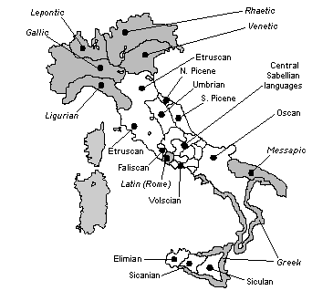
The geographic distribution of the Old Italic script is shown in the figure above. In the figure, the approximate distribution of ancient languages which used Old Italic alphabets is shown in white. Areas for ancient languages which used other scripts are shown in gray, and the labels for those languages are shown in oblique type. In particular, note that the ancient Greek colonies of the southern Italian and the Sicilian coasts used the Greek script proper. And languages such as Ligurian, Venetic, etc., of the far north of Italy made use of alphabets of the Alpine script. Rome, of course, is also shown in gray, since Latin was written with the Latin alphabet, now encoded in the Latin script.
The Gothic script was devised in the fourth century by the Gothic bishop, Wulfila (311-383 CE), to provide his people with a written language and a means of reading his translation of the Bible. Written Gothic materials are largely restricted to fragments of Wulfila's translation of the Bible; these fragments are of considerable importance in New Testament textual studies. The chief manuscript, kept at Uppsala, is the Codex Argenteus or "the Silver Book," which is partly written in gold on purple parchment. Gothic is an East Germanic language; this branch of Germanic has died out and thus the Gothic texts are of great importance in historical and comparative linguistics. Wulfila appears to have used the Greek script as a source for the Gothic, as can be seen from the basic alphabetical order. Some of the character shapes suggest Runic or Latin influence, but this is apparently coincidental.
Diacritics. The tenth letter U+10339 GOTHIC LETTER EIS is used with U+0308 COMBINING DIAERESIS when word-initial, when syllable-initial after a vowel, and in compounds with a verb as second member as shown below:
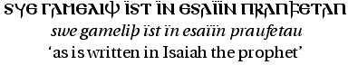
To indicate contractions or omitted letters, U+0305 COMBINING OVERLINE is used.
Numerals. Gothic letters, like those of other early Western alphabets, can be used as numbers; two of the characters have only a numeric value, and are not used alphabetically. To indicate numeric use of a letter, it is either flanked on either side by U+00B7 MIDDLE DOT, or it is followed by both U+0304 COMBINING MACRON and U+0331 COMBINING MACRON BELOW as shown in the following example:
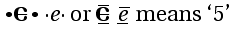
Punctuation. Gothic manuscripts are written with no space between words in what is called scriptio continua. Sentences and major phrases are often separated by U+0020 SPACE, U+00B7 MIDDLE DOT or U+003A COLON.
Because of the addition of CJK Unified Ideographs Extension B, change the definition of UnifiedIdeograph on page 269 from the following:
UnifiedIdeograph ::= U+3400 | U+3401 | ... | U+4DB4 | U+4DB5 | U+4E00 | U+4E01 | ...
| U+9FA4 | U+9FA5 | U+FA0E |U+FA0F | U+FA11 | U+FA13 | U+FA14
| U+FA1F |U+FA21 | U+FA23 | U+FA24 | U+FA27 | U+FA28 |U+FA29
to this:
UnifiedIdeograph ::= U+3400 | U+3401 | ... | U+4DB4 | U+4DB5 | U+4E00 | U+4E01 | ...
| U+9FA4 | U+9FA5 | U+FA0E |U+FA0F | U+FA11 | U+FA13 | U+FA14
| U+FA1F |U+FA21 | U+FA23 | U+FA24 | U+FA27 | U+FA28 |U+FA29
| U+20000| U+20001| ... | U+2A6D5| U+2A6D6
The ideographs in the CJK Unified Ideographs Extension B represent an additional set of 42,711 ideographs beyond the 27,484 included in The Unicode Standard, Version 3.0.
Section 10.1, Han in The Unicode Standard describes the basic principles underlying the selection, organization, and unification of Han ideographs. These same principles apply to the ideographs in the CJK Unified Ideographs Extension B block.
The ideographs in this block are derived from the six IRG sources: G-source, H-source, T-source, J-source, K-source, and V-source. There is no U-source for ideographs in the CJK Unified Ideographs Extension B block. The H-source represents a new IRG source beyond the ones used for earlier blocks of Han ideographs and is used for characters derived from standards published by the Hong Kong SAR.
The standards and other references associated with these six IRG sources are listed in the table below. For each of the six IRG sources, the second column of the table contains an abbreviated name of the source; the third column gives a descriptive name. The abbreviated names are used in various data files published by the Unicode Consortium and ISO/IEC to identify the specific IRG sources. For a more detailed explanation of the format of this table, refer to Table 10-1, Sources for Unified Han, on page 259 of The Unicode Standard, Version 3.0.
| G source: | G_KX | KangXi dictionary ideographs (including the addendum) not already encoded in the BMP |
| G_HZ | Hanyu Da Zidian ideographs not already encoded in the BMP | |
| G_CY | Ci Yuan | |
| G_CH | Ci Hai | |
| G_HC | Hanyu Da Cidian | |
| G_BK | Chinese Encyclopedia | |
| G_FZ | Founder Press System | |
| G_4K | Siku Quanshu | |
| H source: | H | Hong Kong Supplementary Character Set |
| T source: | T4 | CNS 11643-1992, 4th plane |
| T5 | CNS 11643-1992, 5th plane | |
| T6 | CNS 11643-1992, 6th plane | |
| T7 | CNS 11643-1992, 7th plane | |
| TF | CNS 11643-1992, 15th plane | |
| J source: | J3 | JIS X 0213:2000, level 3 |
| J4 | JIS X 0213:2000, level 4 | |
| K source: | K4 | PKS 5700-3:1998 |
| V source: | V0 | TCVN 5773:1993 |
| V2 | VHN 01:1998 | |
| V3 | VHN 02:1998 |
As with other Han ideograph blocks, the ideographs in the CJK Unified Ideographs Extension B block are derived from versions of national standards submitted to the IRG by its members. They may in some instances be slightly different from published versions of these standards.
As with other CJK unified ideographs, the names for these characters are algorithmic. Thus, CJK UNIFIED IDEOGRAPH-20000 is the name for the ideograph at U+20000.
These ideographs may be used in Ideographic Description Sequences (see The Unicode Standard, Version 3.0, Section 10.1, Han, pages 268-271).
This block consists of additional compatibility ideographs required for
round-trip compatibility with CNS 11643-1992, planes 3, 4, 5, 6, 7, and 15. They
should not be used for any other purpose and, in particular, may not be used in
Ideographic Description Sequences.
The names for the compatibility ideographs are also algorithmic. Thus, the name
for the compatibility ideograph U+2F800 is CJK COMPATIBILITY IDEOGRAPH-2F800.
On page 278, modify the "Standard Mandarin Bopomofo" paragraph as follows:
The order of the Mandarin Bopomofo letters U+3105.. U+3129 is standard worldwide. The code offset of the first letter U+3105 BOPOMOFO LETTER
B from a multiple of 16 is included to match the offset in the ISO-registered standard GB 2312.
The character U+3127 BOPOMOFO LETTER I may be rendered as either a
horizontal stroke or a vertical stroke is usually written as a vertical stroke when Bopomofo text is set
vertically. Often the glyph is chosen to stand
perpendicular to the text baseline (e.g. a horizontal stroke in
vertically-set text), but other usage is also common. In the Unicode
Standard, this representation is considered to be a rendering variation; the variant is not assigned a separate character
code. the form shown in the charts is a horizontal stroke; the vertical
stroke form is considered to be a rendering variant. The variant glyph is
not assigned a separate character code.
Deseret is a phonemic alphabet devised to write the English language. It was originally developed in the 1850s at the University of Deseret, now the University of Utah. It was promoted by The Church of Jesus Christ of Latter-day Saints, also known as the "Mormon" or LDS Church, under Church President Brigham Young (1801-1877). The name Deseret is taken from a word in the Book of Mormon defined to mean "honeybee" and reflects the LDS use of the beehive as a symbol of cooperative industry. Most literature about the script treats the term Deseret Alphabet as a proper noun and capitalizes it as such.
Among the designers of the Deseret Alphabet was George D. Watt, who had been trained in shorthand and served as Brigham Young's secretary. It is possible that, under Watt's influence, Sir Isaac Pitman's 1847 English Phonotypic Alphabet was used as the model for the Deseret Alphabet.
The Church commissioned two typefaces and published four books using the Deseret Alphabet. The Church-owned Deseret News also published passages of scripture using the alphabet on occasion. In addition, some historical records, diaries, and other materials were handwritten using this script, and it had limited use on coins and signs. There is also one tombstone in Cedar City, Utah, written in the Deseret Alphabet. However, the script failed to gain wide acceptance and was not actively promoted after 1869. Today, the Deseret Alphabet remains of interest primarily to historians and hobbyists.
Letter Names and Shapes. Pedagogical materials produced by the LDS Church gave names to all of the non-vowel letters and indicated the vowel sounds with English examples. In the Unicode Standard, the spelling of the non-vowel letter names has been modified to clarify their pronunciations, and the vowels have been given names which emphasize the parallel structure of the two vowel runs.
The glyphs used in the Unicode Standard are derived from the second typeface commissioned by the LDS Church and represent the shapes most commonly found. Alternate glyphs are found in the first typeface and in some instructional material.
Structure. The script consists of thirty-eight letters. The alphabet is bicameral; capital and small letters differ only in size and not in shape. The order of the letters is phonetic: letters for similar classes of sound are grouped together. In particular, most consonants come in unvoiced/voiced pairs.
Sorting. The order of the letters in the Unicode Standard is the one used in all but one of the nineteenth-century descriptions of the alphabet. The exception is one in which the letters WU and YEE are inverted. The order YEE-WU follows the order of the "coalescents" in Pitman's work; the order WU-YEE appears in a greater number of Deseret materials however, and has been followed here.
There is no evidence that any early materials written using the Deseret Alphabet were alphabetized. It is assumed that sorting and collation would have been based directly on the order of the letters within the alphabet.
Typographic Conventions. The Deseret Alphabet is written from left to right. Punctuation, capitalization, and digits are the same as in English. All words are written phonemically with the exception of short words that have pronunciations equivalent to letter names.
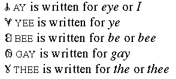
Phonetics. An approximate IPA transcription of the sounds represented by the Deseret Alphabet is shown below.
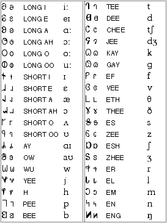
The Mathematical Alphanumeric Symbols block contains a large extension of letterlike symbols used in mathematical notation, typically for variables. The characters in this block are intended for use only in mathematical or technical notation; they are not intended for use in non-technical text. When used with markup languages, for example with MathML Mathematical Markup Language (MathML™) the characters are expected to be used directly, instead of indirectly via entity references or by composing them from base letters and style markup.
Words Used as Variables. In some specialties, whole words are used as variables, not just single letters. For these cases, style markup is preferred because in ordinary mathematical notation the juxtaposition of variables generally implies multiplication, not word formation as in ordinary text. Markup not only provides the necessary scoping in these cases, it also allows the use of a more extended alphabet.
Basic Set of Alphanumeric Characters. Mathematical notation uses a basic set of mathematical alphanumeric characters which consists of:
Only unaccented forms of the letters are used for mathematical notation, because general accents such as the acute accent would interfere with common mathematical diacritics. Examples of common mathematical diacritics that can interfere with general accents are the circumflex, macron, or the single or double dot above, the latter two of which are used in physics to denote derivatives with respect to the time variable. Mathematical symbols with diacritics are always represented by combining character sequences.
For some characters in the basic set of Greek characters, two variants of the same character are included. This is because they can appear in the same mathematical document with different meanings, even though they would have the same meaning in Greek text.
Additional Characters. In addition to this basic set, mathematical notation also uses the four Hebrew-derived characters (U+2135..U+2138). Occasional uses of other alphabetic and numeric characters are known. Examples include U+0428 CYRILLIC CAPITAL LETTER SHA, U+306E HIRAGANA LETTER NO, and Eastern Arabic-Indic digits (U+06F0..U+06F9). However, these characters are used in only the basic form.
Semantic Distinctions. Mathematical notation requires a number of Latin and Greek alphabets that initially appear to be mere font variations of one another. For example, the letter H can appear as plain, or upright (H), bold (H), italic (H) and script. However, in any given document, these characters have distinct, and usually unrelated mathematical semantics. For example, a normal H represents a different variable from a bold H, etc. If these attributes are dropped in plain text, the distinctions are lost and the meaning of the text is altered. Without the distinctions, the well-known Hamiltonian formula
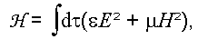
turns into this integral equation in the variable H
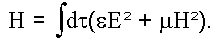
By encoding a separate set of alphabets, it is possible to preserve such distinctions in plain text.
Mathematical Alphabets. The alphanumeric symbols encountered in mathematics and encoded in the Unicode Standard are given in the following table:
|
Math Style |
Characters from Basic Set |
Location |
|
plain (upright, serifed) |
Latin, Greek and digits |
BMP |
|
bold |
Latin, Greek and digits |
Plane 1 |
|
italic |
Latin and Greek |
Plane 1* |
|
bold italic |
Latin and Greek |
Plane 1 |
|
script (calligraphic) |
Latin |
Plane 1* |
|
bold script (calligraphic) |
Latin |
Plane 1 |
|
Fraktur |
Latin |
Plane 1* |
|
bold Fraktur |
Latin |
Plane 1 |
|
double-struck |
Latin and digits |
Plane 1* |
|
sans-serif |
Latin and digits |
Plane 1 |
|
sans-serif bold |
Latin, Greek and digits |
Plane 1 |
|
sans-serif italic |
Latin |
Plane 1 |
|
sans-serif bold italic |
Latin and Greek |
Plane 1 |
|
monospace |
Latin and digits |
Plane 1 |
* Some of these alphabets have characters in the BMP as noted in the text that follows.
The plain letters have been unified with the existing characters in the Basic Latin and Greek blocks. There are 25 double-struck, italic, Fraktur and script characters that already exist in the Letterlike Symbols block (U+2100..U+214F). These are explicitly unified with the characters in this block and corresponding holes have been left in the mathematical alphabets.
The alphabets in this block encode only semantic distinction, but not which specific font will be used to supply the actual plain, script, Fraktur, double-struck, sans-serif, or monospace glyphs. Especially the script and double-struck styles can show considerable variation across fonts. Mathematical Alphanumeric Symbols are not to be used for non-mathematical styled text.
Compatibility Decompositions. All mathematical alphanumeric symbols have compatibility decompositions to the base Latin and Greek letters -- folding away such distinctions, however, is usually not desirable as it loses the semantic distinctions for which these characters were encoded. See Unicode Standard Annex #15, Unicode Normalization Forms for more information.
Mathematicians place strict requirements on the specific fonts being used to represent mathematical variables. Readers of a mathematical text need to be able to distinguish single letter variables from each other, even when they don't appear in close proximity. They must be able to recognize the letter itself, whether it is part of the text or is a mathematical variable, and lastly which mathematical alphabet it is from.
Mathematical variables are most commonly set in a form of italics, but not all italic fonts can be used successfully. In common text fonts, the italic letter v and Greek letter nu are not very distinct. A rounded italic letter v is therefore preferred in a mathematical font. There are other characters which sometimes have similar shapes and require special attention to avoid ambiguity. Examples are shown in the table below.
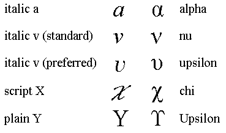
Hard-to-distinguish Letters. Not all sans-serif fonts allow an easy distinction between lowercase l, and uppercase I and not all monospaced (monowidth) fonts allow a distinction between the letter l and the digit one. Such fonts are not usable for mathematics. In Fraktur, the letters I and J in particular must be made distinguishable. Overburdened Black Letter forms are inappropriate. Similarly, the digit zero must be distinct from the uppercase letter O for all mathematical alphanumeric sets. Some characters are so similar that even mathematical fonts do not attempt to provide distinct glyphs for them. Their use is normally avoided in mathematical notation unless no confusion is possible in a given context, e.g. uppercase A and uppercase Alpha.
Font Support for Combining Diacritics. Mathematical equations require that characters be combined with diacritics (dots, tilde, circumflex, or arrows above are common), as well as followed or preceded by super- or subscripted letters or numbers. This requirement leads to designs for italic styles that are less inclined, and script styles that have smaller overhangs and less slant than equivalent styles commonly used for text such as wedding invitations.
Typestyle for Script Characters. In some instances, a deliberate unification with a non-mathematical symbol has been undertaken; for example, U+2133 is unified with the pre-1949 symbol for the German currency unit Mark and U+2113 is unified with the common non-SI symbol for the liter. This unification restricts the range of glyphs that can be used for this character in the charts. Therefore the font used for the reference glyphs in the code charts uses a simplified ‘English Script’ style, as per recommendation by the American Mathematical Society. For consistency, other script characters in the Letterlike Symbols block are now shown in the same typestyle.
Double-struck Characters. The double-struck glyphs shown in earlier editions of the standard attempted to match the design used for all the other Latin characters in the standard, which is based on Times. The current set of fonts was prepared in consultation with the American Mathematical Society and leading mathematical publishers, and shows much simpler forms that are derived from the forms written on a blackboard. However, both serifed and non-serifed forms can be used in mathematical texts, and inline fonts are found in works published by certain publishers.
Byzantine musical notation first appeared in the seventh or eighth century CE, developing more fully by the tenth century. Byzantine Musical Symbols are chiefly used to write the religious music and hymns of the the Christian Orthodox Church, though folk music manuscripts are also known. In 1881, the Orthodox Patriarchy Musical Committee redefined some of the signs and established the New Analytical Byzantine Musical Notation System, which is in use today. About 95% of the more than 7000 musical manuscripts using this system are in Greek. Other manuscripts are in Russian, Bulgarian, Romanian, and Arabic.
Processing. Computer representation of Byzantine Musical Symbols is quite recent, although typographic publication of religious music books began in 1820. Two kinds of applications have been developed: applications to enable musicians to write the books they use, and applications which compare or convert this musical notation system to the standard Western system. (See Musical Symbols, U+1D100..U+1D1FF.)
Byzantine Musical Symbols are divided into fifteen classes according to function. Characters interact with one another in the horizontal and vertical dimension. There are three horizontal "stripes" in which various classes generally appear, and rules as to how other characters interact within them. These rules are still being specified, and at present the plain-text manipulation of Byzantine musical symbols, like that of Western musical symbols, is outside the scope of the Unicode Standard.
The Musical Symbols encoded in the Unicode Standard are intended to cover basic Western musical notation and its antecedents: mensural notation, and plainsong (or Gregorian) notation. The most comprehensive coded language in regular use for representing sound is the common musical notation (CMN) of the Western world. Western musical notation is a system of symbols that is relatively, but not completely, self-consistent and relatively stable but still, like music itself, evolving. It is an open-ended system that has survived over time partly because of its flexibility and extensibility. In the Unicode Standard, Musical Symbols have been drawn primarily from CMN. Commonly recognized additions to the CMN repertoire, such as quarter-tone accidentals, cluster noteheads, and shape-note noteheads have also been included.
Graphical score elements are not included in the Musical Symbols block. These are pictographs usually created for a specific repertoire (sometimes even a single piece). Characters which have some specialized meaning in music but are found in other character sets, are also not included. These include numbers for time signatures and figured basses, letters for section labels and Roman numeral harmonic analysis, etc.
Musical Symbols are used worldwide in a more-or-less standard manner by a very large group of users. The symbols frequently occur in running text and may be treated as simple spacing characters with no special properties, with a few exceptions. Musical symbols are used in contexts such as theoretical works, pedagogical texts, terminological dictionaries, bibliographic databases, thematic catalogues, and databases of musical data. The Musical Symbol characters are also intended to be used within higher-level protocols, such as music description languages and file formats for the representation of musical data and musical scores.
Because of the complexities of layout and of pitch representation in general, the encoding of musical pitch is intentionally outside the scope of the Unicode Standard. The Musical Symbol block provides a common set of elements for interchange and processing. Encoding of pitch, and layout of resulting musical structure, involves not only specifications for the vertical relationship between multiple notes simultaneously, but in multiple staves, between instrumental parts, and so forth. These musical features are expected to be handled entirely in higher-level protocols making use of the proposed graphical elements. Lack of pitch encoding is not a shortcoming, but is a necessary feature of the encoding.
Three characters, U+266D MUSIC FLAT SIGN, U+266E MUSIC NATURAL SIGN, and U+266F MUSIC SHARP SIGN, which occur frequently in music notation are encoded in the Miscellaneous Symbols block (U+2600..U+267F). However, four characters also encoded in that block are to be interpreted merely as dingbats or miscellaneous symbols, not as representing actual musical notes. These are:
The punctum, or Gregorian brevis, a square shape, is unified with the U+1D147 MUSICAL SYMBOL SQUARE NOTEHEAD BLACK. The Gregorian semi-brevis, a diamond or lozenge shape, is unified with U+1D1BA MUSICAL SYMBOL SEMIBREVIS BLACK. Thus, Gregorian notation, medieval notation, and modern notation require either separate fonts in practice, or need font features to differentiate subtly different shapes where required.
Processing. Most musical symbols can be thought of as simple spacing characters when used in-line within texts and examples, even though they behave in a more complex manner in full musical layout. Some characters are meant only to be combined with others to produce combined character sequences, representing musical notes and their particular articulations. Musical symbols can be input, processed, and displayed in a manner similar to mathematical symbols. When embedded in text, most of the symbols are simple spacing characters with no special properties. There are a few characters with format control functions which are described below.
Input Methods. Musical symbols can be entered via standard alphanumeric keyboard, piano keyboard or other device, or by a graphical method. Keyboard input of the musical symbols may make use of techniques similar to those used for Chinese, Japanese, and Korean. In addition, input methods utilizing pointing devices or piano keyboards could be developed similar to those in existing musical layout systems. For example, within a graphical user interface, the user could choose symbols from a palette-style menu.
Directionality. There are no known bidirectional implications for Musical Symbols. When combined with right-to-left texts, in Hebrew or Arabic for example, the music notation is still written left-to-right as usual. The words are divided into syllables and placed under or above the notes in the same fashion as for Latin scripts. The individual words or syllables corresponding to each note, however, are written in the dominant direction of the script.
Format Characters. Extensive ligature-like beams are used frequently in music notation between groups of notes having short values. The practice is widespread and very regular, and is amenable to algorithmic handling. The format characters U+1D173 MUSICAL SYMBOL BEGIN BEAM and U+1D174 MUSICAL SYMBOL END BEAM can be used to indicate the extents of beam groupings. In some exceptional cases, beams are left-unclosed on one end. This can be indicated with a U+1D159 MUSICAL SYMBOL NULL NOTEHEAD character if no stem is to appear at the end of the beam.
Similarly, format characters have been provided for other connecting structures. The characters U+1D175 MUSICAL SYMBOL BEGIN TIE, U+1D176 MUSICAL SYMBOL END TIE, U+1D177 MUSICAL SYMBOL BEGIN SLUR, U+1D178 MUSICAL SYMBOL END SLUR, U+1D179 MUSICAL SYMBOL BEGIN PHRASE, and U+1D17A MUSICAL SYMBOL END PHRASE indicate the extent of these features. Like beaming, these features are easily handled in an algorithmic fashion.
These pairs of characters modify the layout and grouping of notes and phrases in full music notation. When musical examples are written or rendered in plain text without special software, the start/end format characters may be rendered as brackets or left uninterpreted. To the extent possible, more sophisticated in-line software may interpret them in their actual format control capacity, rendering slurs, beams, and so forth as appropriate.
Precomposed Note Characters. For maximum flexibility, the character set includes both precomposed note values and primitives from which complete notes may be constructed. The precomposed versions are provided mainly for convenience. However, if any normalization form is applied, the characters will be decomposed. For further information, see Unicode Standard Annex #15, Unicode Normalization Forms. The canonical equivalents for these characters are given in the Unicode Character Database, and illustrated in the table below. In this table and subsequent examples, the names of the Unicode Musical Symbol characters are abbreviated by omitting the phrases MUSICAL SYMBOL or MUSICAL SYMBOL ORNAMENT.
| Precomposed note | Equivalent to | |
| 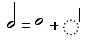 | 1D15E HALF NOTE | 1D157 VOID NOTEHEAD + 1D165 COMBINING STEM |
| 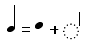 | 1D15F QUARTER NOTE | 1D158 NOTEHEAD BLACK + 1D165 COMBINING STEM |
| 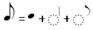 | 1D160 EIGHTH NOTE | 1D158 NOTEHEAD BLACK + 1D165 COMBINING STEM + 1D16E COMBINING FLAG-1 |
| 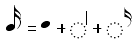 | 1D161 SIXTEENTH NOTE | 1D158 NOTEHEAD BLACK + 1D165 COMBINING STEM + 1D16F COMBINING FLAG-2 |
| 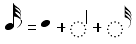 | 1D162 THIRTY-SECOND NOTE | 1D158 NOTEHEAD BLACK + 1D165 COMBINING STEM + 1D170 COMBINING FLAG-3 |
| 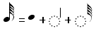 | 1D163 SIXTY-FOURTH NOTE | 1D158 NOTEHEAD BLACK + 1D165 COMBINING STEM + 1D171 COMBINING FLAG-4 |
| 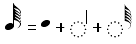 | 1D164 ONE HUNDRED TWENTY-EIGHTH NOTE | 1D158 NOTEHEAD BLACK + 1D165 COMBINING STEM + 1D172 COMBINING FLAG-5 |
Alternative Noteheads. More complex notes built up from alternative noteheads, stems, flags, and articulation symbols are necessary for complete implementations and complex scores. Examples of their use include American shape-note and modern percussion notations. For example:
| 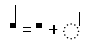 | 1D147 SQUARE NOTEHEAD BLACK + 1D165 COMBINING STEM |
| 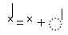 | 1D143 X NOTEHEAD + 1D165 COMBINING STEM |
Augmentation Dots and Articulation Symbols. Augmentation dots and articulation symbols may be appended to either the precomposed or built-up notes. In addition, augmentation dots and articulation symbols may be repeated as necessary to build a complete note symbol. Examples of the use of augmentation dots are shown in the table below.
| 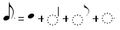 | 1D160 EIGHTH NOTE + 1D16D COMBINING AUGMENTATION DOT | 1D158 NOTEHEAD BLACK + 1D165 COMBINING STEM + 1D16E COMBINING FLAG-1 + 1D16D COMBINING AUGMENTATION DOT |
| 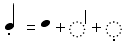 | 1D15F QUARTER NOTE + 1D17C COMBINING STACCATO | 1D158 NOTEHEAD BLACK + 1D165 COMBINING STEM + 1D17C COMBINING STACCATO |
| 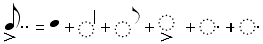 | 1D160 EIGHTH NOTE + 1D16D COMBINING AUGMENTATION DOT + 1D16D COMBINING AUGMENTATION DOT + 1D17B COMBINING ACCENT | 1D158 NOTEHEAD BLACK + 1D165 COMBINING STEM + 1D16E COMBINING FLAG-1 + 1D17B COMBINING ACCENT + 1D16D COMBINING AUGMENTATION DOT + 1D16D COMBINING AUGMENTATION DOT |
Ornamentation Chart. Included below is a list of common eighteenth-century ornaments and the combining sequences of characters from which they can be generated.
| 1D19C STROKE-2 + 1D19D STROKE-3 | |
| 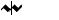 | 1D19C STROKE-2 + 1D1A0 STROKE-6 + 1D19D STROKE-3 |
| 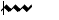 | 1D1A0 STROKE-6 + 1D19C STROKE-2 + 1D19C STROKE-2 + 1D19D STROKE-3 |
| 1D19C STROKE-2 + 1D19C STROKE-2 + 1D1A0 STROKE-6 + 1D19D STROKE-3 | |
| 1D19C STROKE-2 + 1D19C STROKE-2 + 1D1A3 STROKE-9 | |
| 1D1A1 STROKE-7 + 1D19C STROKE-2 + 1D19C STROKE-2 + 1D19D STROKE-3 | |
| 1D1A2 STROKE-8 + 1D19C STROKE-2 + 1D19C STROKE-2 + 1D19D STROKE-3 | |
| 1D19C STROKE-2 + 1D19C STROKE-2 + 1D19D STROKE-3 + 1D19F STROKE-5 | |
| 1D1A1 STROKE-7 + 1D19C STROKE-2 + 1D19C STROKE-2 + 1D1A0 STROKE-6 + 1D19D STROKE-3 | |
| 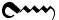 | 1D1A1 STROKE-7 + 1D19C STROKE-2 + 1D19C STROKE-2 + 1D19D STROKE-3 + 1D19F STROKE-5 |
| 1D1A2 STROKE-8 + 1D19C STROKE-2 + 1D19C STROKE-2 + 1D1A0 STROKE-6 + 1D19D STROKE-3 | |
| 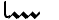 | 1D19B STROKE-1 + 1D19C STROKE-2 + 1D19C STROKE-2 + 1D19D STROKE-3 |
| 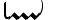 | 1D19B STROKE-1 + 1D19C STROKE-2 + 1D19C STROKE-2 + 1D19D STROKE-3 + 1D19E STROKE-4 |
| 1D19C STROKE-2 + 1D19D STROKE-3 + 1D19E STROKE-4 |
In some orthographies the same letters may either ligate or not, depending on the intended reading. To account for this, the semantics of the ZWNJ and ZWJ have been extended.
Section 13.2, Controlling Ligatures, page 318: the text is superseded by the following.
To allow for finer control over ligature formation, starting with Unicode 3.0.1 the definitions of the following characters have been broadened to cover ligatures as well as cursive connection:
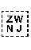 U+200C ZERO WIDTH NON-JOINER
- The intended semantic is to break both cursive connections and ligatures in rendering.
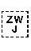 U+200D ZERO WIDTH JOINER
- The intended semantic is to produce a more connected rendering of adjacent characters than would otherwise be the case, if possible. In particular:
- If the two characters could form a ligature, but do not normally, ZWJ requests that the ligature be used.
- Otherwise, if either of the characters could cursively connect, but do not normally, ZWJ requests that each of the characters take a cursive-connection form where possible.
- In a sequence like <X, ZWJ, Y>, where a cursive form exists for X, but not for Y, the presence of ZWJ requests a cursive form for X.
- Otherwise, where neither a ligature nor cursive connection are available, the ZWJ has no effect.
In other words given three broad categories below, ZWJ requests that glyphs in the highest available category (for the given font) be used; ZWNJ requests that glyphs in the lowest available category (for the given font) be used:
- unconnected
- cursively connected
- ligated
For those unusual circumstances where someone wants to forbid ligatures in a sequence XY, but promote cursive connection, the sequence <X, ZWJ, ZWNJ, ZWJ, Y> can be used. The ZWNJ breaks ligatures, while the two adjacent joiners cause the X and Y to take adjacent cursive forms (where they exist). Similarly, if someone wanted to have X take a cursive form but Y be isolated, then the sequence <X, ZWJ, ZWNJ, Y> could be used (as in previous versions of the Unicode Standard). Examples are shown in the table below.
Note: Zero width joiner (ZWJ) has a special function when used with Indic scripts. See Section 9.1, Devanagari, page 215.
Examples. The following provide samples of desired renderings when the joiner or non-joiner are inserted between two characters. In the Arabic examples, the characters on the left side are in visual order already, but have not yet been shaped. This presumes that all of the glyphs are available in the font. If, for example, the ligatures are not available, the display would fallback to the unligatured forms.
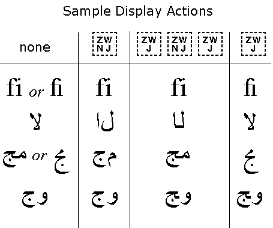
Implementation Notes. For modern font technologies, such as OpenType or AAT, font vendors should add ZWJ to their ligature mapping tables as appropriate. Thus where a font had a mapping from
"f" + "i"to , the font designer should add the additional mapping from"f" + ZWJ + "i"to . On the other hand, ZWNJ will normally have the desired effect naturally for most fonts without any change, since it simply obstructs the normal ligature/cursive connection behavior. As with all other alternate format characters, fonts should use an invisible zero-width glyph for representation of both ZWJ and ZWNJ.Effects on Existing Data. Existing data should only rarely contain ZWJ between characters that normally connect cursively, since in previous versions of the standard such use was simply redundant. In poor implementations such a redundant ZWJ conceivably could have resulted in a broken cursive connection -- data generated for such implementations would almost certainly be free of ZWJs not needed for shaping. The vast majority of existing data can be rendered with newer implementations without any change in appearance.
Effects on Existing Implementations. Existing rendering algorithms support ZWJ only as far as it affects shaping. If such an implementation receives newer text, the ZWJ either has no effect, or, in a poor implementation of a shaping algorithm, could lead to a broken cursive connection. However, occurrence of ZWJ was never restricted, so even existing algorithms should have been prepared to handle it gracefully.
The characters in this block provide a mechanism for language tagging in Unicode plain text. However, the use of these characters is strongly discouraged. The characters in this block are reserved for use with special protocols. They are not to be used in the absence of such protocols, or with any protocols that provide alternate means for language tagging, such as HTML or XML. The requirement for language information embedded in plain text data is often overstated. See Section 5.11, Language Information in Plain Text in The Unicode Standard, Version 3.0.
This block encodes a set of 95 special-use tag characters to enable the spelling out of ASCII-based string tags using characters which can be strictly separated from ordinary text content characters in Unicode. These tag characters can be embedded by protocols into plain text. They can be identified and/or ignored by implementations with trivial algorithms because there is no overloading of usage for these tag characters--they can only express tag values and never textual content itself.
In addition to these 95 characters, one language tag identification character and one cancel tag character are also encoded. The language tag identification character identifies a tag string as a language tag; the language tag itself makes use of RFC 3066 (or its successors) language tag strings spelled out using the tag characters from this block.
Four terms (tagging, annotation, out-of-band and in-band) which are used in special senses here are defined in the Glossary.
Tag Identification. The tag identification character is used as a mechanism for identifying tags of different types. In the future, this could enable multiple types of tags embedded in plain text to coexist.
Tag Termination. No termination character is required for the tag itself, because all characters that make up the tag are numerically distinct from any non-tag character. A tag terminates either at the first non-tag character (i.e. any other normal Unicode value), or at next tag identification character. A detailed BNF syntax for tags is listed below.
Language Tags. A string of tag characters prefixed by U+E0001 LANGUAGE TAG is specified to constitute a language tag. Furthermore, the tag values for the language tag are to be spelled out as specified in RFC 3066, making use only of registered tag values or of user-defined language tags starting with the characters "x-".
For example, consider embedding a language tag for Japanese. The Japanese tag from RFC 3066 is "ja" (composed of ISO 639 language id) or, alternatively, "ja-JP" (composed of ISO 639 language id plus ISO 3166 country id). Since RFC 3066 specifies that language tags are not case significant, it is recommended that for language tags, the entire tag be lowercased before conversion to tag characters.
Thus the entire language tag in its "ja-JP" would be converted to the tag characters as follows:
U+E0001 U+E006A U+E0061 U+E002D U+E006A U+E0070
The language tag, in its shorter, "ja" form, would be expressed as follows:
U+E0001 U+E006A U+E0061
Tag Scope and Nesting. The value of an established tag continues from the point the tag is embedded in text until either:
A. The text itself goes out of scope, as defined by the application. (E.g. for line-oriented protocols, when reaching the end-of-line or end-of-string; for text streams, when reaching the end-of-stream; etc.)or
B. The tag is explicitly canceled by the U+E007F CANCEL TAG character.Tags of the same type cannot be nested in any way. For example, if a new embedded language tag occurs following text which was already language tagged, the tagged value for subsequent text simply changes to that specified in the new tag.
Tags of different types can have interdigitating scope, but not hierarchical scope. In effect, tags of different types completely ignore each other, so that the use of language tags can be completely asynchronous with the use of future tag types.
Canceling Tag Values. The main function of CANCEL TAG is to make possible operations such as blind concatenation of strings in a tagged context without the propagation of inappropriate tag values across the string boundaries. There are two uses of CANCEL TAG. To cancel a tag value of a particular type, prefix the CANCEL TAG character with the tag identification character of the appropriate type. For example, the complete string to cancel a language tag is:
U+E0001 U+E007F
The value of the relevant tag type returns to the default state for that tag type, namely: no tag value specified, the same as untagged text. To cancel any tag values of any type which may be in effect, use CANCEL TAG without a prefixed tag identification character.
Note: Currently there is no observable difference in the two uses of CANCEL TAG, because only one tag identification character (and therefore one tag type) is defined. Inserting a bare CANCEL TAG in places where only the language tag needs to be canceled, could lead to unanticipated side effects if this text were to be inserted in the future into a text that supports more than one tag type.
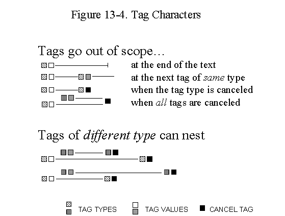
Avoiding Language Tags. Because of the extra implementation burden, language tags should be avoided in plain text unless language information is required and it is known that the receivers of the text will properly recognize and maintain the tags. However, where language tags must be used, implementers should consider the following implementation issues involved in supporting language information with tags and decide how to handle tags where they are not fully supported. This discussion applies to any mechanism for providing language tags in a plain text environment.
Higher-Level Protocols. Language tags should also be avoided wherever higher-level protocols, such as a rich-text format, HTML or MIME, provide language attributes. This practice prevents cases where the higher-level protocol and the language tags disagree. See Unicode Technical Report #20, "Unicode in XML and other Markup Languages".
Effect of Tags on Interpretation of Text. Implementations that support language tags, may need to take them into account for special processing, such as hyphenation or choice of font. However, the tag characters themselves have no display and do not affect line breaking, character shaping or joining, or any other format or layout properties. Processes interpreting the tag may choose to impose such behavior based on the tag value that it represents.
Display. Characters in the tag character block have no visible rendering in normal text and the language tags themselves are not displayed. This choice may not require modification of the displaying program, if the fonts on that platform have the language tag characters mapped to zero-width, invisible glyphs. For debugging or other operations which must render the tags themselves visible, it is advisable that the tag characters be rendered using the corresponding ASCII character glyphs (perhaps modified systematically to differentiate them from normal ASCII characters). But the tag character values are chosen so that the tag characters will be interpretable in most debuggers even without display support.
Processing. Sequential access to the text is generally straightforward. If language codes are not relevant to the particular processing operation, then they should be ignored. Random access to stateful tags is more problematic. Because the current state of the text depends upon tags previous to it, the text must be searched backward, sometimes all the way to the start. With these exceptions, tags pose no particular difficulties as long as no modifications are made to the text.
Range Checking for Tag Characters. Tag characters are encoded in Plane 14 to support easy range checking. The following C/C++ source code snippets show efficient implementations of range checks for characters E0000 to E007F expressed in each of the three significant Unicode encoding forms. Range checks allow implementations that do not want to support these tag characters to efficiently filter for them.
Range check expressed in UTF-32:
if ( ((unsigned) *s) - 0xE0000 <= 0x7F )Range check expressed in UTF-16:
if ( ( *s == 0xDB40 ) && ( ((unsigned)*(s+1)) - 0xDC00 <= 0x7F ) )Expressed in UTF-8:
if ( ( *s == 0xF3 ) && ( *(s+1) == 0xA0 ) && ( ( *(s+2) & 0xFE ) == 0x80 ) )Alternatively, the range checks for UTF-32 and UTF-16 can be coded with bit masks. Both versions should be equally efficient.
Range check expressed in UTF-32:
if ( ((*s) & 0xFFFFFF80) == 0xE0000 )Range check expressed in UTF-16:
if ( ( *s == 0xDB40 ) && ( *(s+1) & 0xDC80) == 0xDC00 )
Editing and Modification. Inline tags present particular problems for text changes, because they are stateful. Any modifications of the text are more complicated, as those modifications need to be aware of the current language status and the <start>...<end> tags must be properly maintained. If an editing program is unaware that certain tags are stateful and cannot process them correctly, then it is very easy for the user to modify text in ways that corrupt it. For example, a user might delete part of a tag or paste text including a tag into the wrong context.
Dangers of Incomplete Support. Even programs that do not interpret the tags should not allow editing operations to break initial tags or leave tags unpaired. Unpaired tags should be discarded upon a save or send operation.
Nonetheless, malformed text may be produced and transmitted by a tag-unaware editor. Therefore, implementations that do not ignore language tags must be prepared to receive malformed tags. On reception of a malformed or unpaired tag, language tag-aware implementations should reset the language to NONE, and then ignore the tag.
The presence of a well-formed tag is no guarantee that the data is correctly tagged. For example, an application could erroneously label French data with a Spanish tag.
Implementations of Unicode which already make use of out-of-band mechanisms for language tagging or "heavy-weight" in-band mechanisms such as XML or HTML will continue to do exactly what they are doing and will ignore the tag characters completely, and may prohibit their use in order to prevent conflict with the equivalent markup.
1. Semantic constraints are specified by rules in the form of an assertion specified between double braces; the variable $$ denotes the string consisting of all terminal symbols matched by the non-terminal.
Example: {{ Assert ( $$[0] == '?' ); }}
Meaning: The first character of the string matched by this non-terminal must be '?'2. A number of predicate functions are employed in semantic constraint rules which are not otherwise defined; their name is sufficient for determining their predication.
Example: IsRFC3066LanguageIdentifier ( tag-argument )
Meaning: tag-argument is a valid RFC3066 language identifier3. A lexical expander function, TAG, is employed to denote the tag form of an ASCII character; the argument to this function is either a character or a character set specified by a range or enumeration expression.
Example: TAG('-')
Meaning: TAG HYPHEN-MINUS
Example: TAG([A-Z])
Meaning: TAG LATIN CAPITAL LETTER A ... TAG LATIN CAPITAL LETTER Z4. A macro is employed to denote terminal symbols that are character literals which can't be directly represented in ASCII. The argument to the macro is the UNICODE character name.
Example: '${TAG CANCEL}'
Meaning: character literal whose code value is U+E007F5. Occurrence indicators used are '+' (one or more) and '*' (zero or more); optional occurrence is indicated by enclosure in '[' and ']'.
tag : language-tag | cancel-all-tag ;
language-tag : language-tag-introducer language-tag-argument ;
language-tag-argument : tag-argument
{{ Assert ( IsRFC3066LanguageIdentifier ( $$ ); }}
| tag-cancel
;
cancel-all-tag : tag-cancel ;
tag-argument : tag-character+ ;
tag-character : { c : c in
TAG( { a : a in printable ASCII characters or SPACE } ) }
;
language-tag-introducer : '${TAG LANGUAGE}'
;
tag-cancel : '${TAG CANCEL}'
;
The following code charts contain the characters added in Unicode 3.1. They are shown together with the characters that were part of Unicode 3.0. New characters are shown on a yellow background in these code charts.
Code Charts Notice:
At the time of publication, complete fonts for the CJK Unified Extension B were not available. Therefore the charts are missing some glyphs. However, the characters in those positions in the charts are unambiguously defined in Unihan.txt in the Unicode Character Database.
Unicode 3.0 defined 34 noncharacters, 32 of which are in supplementary planes. Unicode 3.1 defines 32 additional noncharacters in the BMP. The following lists the ranges of noncharacters with links to the corresponding charts:
This article contains errata rolled up since the publication of The Unicode Standard, Version 3.0. These errata are listed in the table below, organized by date and category.
An online glossary was created that contained the contents of the glossary found in The Unicode Standard, Version 3.0. Since that time, this glossary has been updated. Global changes have been made to the language to clarify the distinction between code point and code unit. The following definitions have been added: Annotation, BMP Code Point, BMP Character, Code Position, Code Unit, In-band, Noncharacter, Out-of-band, Plane, Row, Supplementary Code Point, Supplementary Character, Supplementary Planes, Surrogate Code Point, Surrogate Character, Tagging, Unicode Sequence Identifier.
| Date | Summary |
|---|---|
| 2001 March 13 |
Normalization
Corrigendum posted.
NOTE: This corrigendum is incorporated in, and superseded by, this document. |
| 2001 January 17 |
Runic Alphabet, p. 174, the 9th symbol in the old futhark (10 lines up from bottom of page) is incorrect and should be U+16BA RUNIC LETTER HAGLAZ H p. 194, correction of subscript in L2, text should read (ALEF.LAM)r rather than (ALEF.LAM)l p. 201, bulleted item 1, "galath" should read "dalath" p. 280, last sentence under "Yi Radicals", delete ", with a "b" added as a suffix" p. 324, second to last line, "FF16" should read "BB16" p. 402, the header "Dependent vowel signs" should appear ahead of 093E DEVANAGARI VOWEL SIGN AA, instead of its current location ahead of 093F DEVANAGARI VOWEL SIGN I. |
| 2000 November 29 | UTF-8
Corrigendum Modifies the definition of UTF-8 to forbid conformant implementations from interpreting non-shortest forms for BMP characters, and clarifies some of the conformance clauses. NOTE: This corrigendum is incorporated in, and superseded by, this document. |
| 2000 September 5 | R.4, Selected References, p. 1008 The misleadingly worded cross-reference at "W3C Recommendation" should be deleted. |
| 2000 August 31 |
Textual Errata Bulleted list, Codespace Assignment for Graphic Characters, p. 23 Second bullet, second paragraph, p. 31 Line boundary control, p. 48 Indic dead-character formation, p. 49 Step 1 of Hangul Syllable Composition, p. 54 Normalization, Alternative Spellings, p. 112 Figure 13-2, Controlling Ligatures, p. 318 |
| Figure and Table Errata
Figure 1-1, p. 2 Figure 2-1, p. 10 Figure 2-3, p. 14 Figure 2-6, p. 19 Table 4-7, p. 97 Table 5-5, p. 129 Table 5-5, p. 130 Figure 5-6, p. 119 Figure 8-2, p. 190 Reference to Figure 9-4, p. 250 Table 13-1, p. 318 Table D-3, p. 976 Change the tenth row, first column, from "0780..07B1" to "0780..07B0". Change the tenth row, second column, from "50" to "49". Change the fourteenth row, second column, from "346" to "345". Table D-3, p. 977 |
|
| Glyph Errata
Ethiopic Set minus Khmer Rial Start of Header Start of Text Arabic Separators All Equal To Black squares C1 control character "index" |
|
| 2000 August 30 | Unicode
3.0.1 (update version)
NOTE: This update is incorporated in, and superseded by, this document. |
| 2000 May 2 | Correction of typographical errors in the Glossary. The definition of BNF on p. 984 should read "context-free," not "content-free." The definition of SGML on p. 994 should read "Standard Generalized Markup Language." |
| 2000 April 6 | Fixed font errors for U+17BE..U+17C5 in Khmer block on pages 473-474. To download as a PDF file, click here. |
| 2000 March 15 | Corrected version of page 851, Han Radical-Stroke index. Download as a TIFF or PDF file. |
The main change to the Unicode Character Database for Unicode 3.1 is the extension of the data files to cover the character repertoire addition. This most importantly impacts UnicodeData.txt, LineBreaks.txt, and EastAsianWidth.txt, each of which has been extended to cover all the newly encoded characters. Also, an updated informative NamesList.txt file is provided to cover the new repertoire.
As of the Unicode 3.0.1 update, UnicodeData.txt already had entries for the user-defined characters beyond U+FFFF, but it is important to note that now UnicodeData.txt (and LineBreaks.txt and EastAsianWidth.txt) have many, many new entries for encoded characters making use of the five-hex-digit notation for the Unicode scalar values, e.g. 1D16E, 2F880, E0061, and so forth. Parsers of the Unicode Character Database files will need to be adjusted accordingly.
The format of UnicodeData.txt has not changed. However, the formats of LineBreaks.txt and EastAsianWidth.txt have been adjusted slightly; the name of the Unicode character is now appended in a comment field, instead of in a data field, so that it will be clear that the normative source of the Unicode character name is only UnicodeData.txt.
Blocks.txt has been extended to cover the new blocks from Planes 1, 2, and 14.
The notes to SpecialCasing.txt have been updated, and a special casing rule has been added for i/I in Azeri.
The notes to CaseFolding.txt have been greatly extended, and the classification used for the folding has been modified. New symbols for the folding partition are in use, so check this file carefully before feeding it to an automated process. There are also repertoire additions to cover Deseret case folding.
The supplementary property list file, PropList.txt, has been changed rather extensively. The format has been modified, to make it easier to parse. Property specifications that were redundant with UnicodeData.txt have been removed. The UTC has now reviewed the contents of PropList.txt and has incorporated it formally into the set of data files in the Unicode Character Database. PropList.txt contains listings of normative and informative properties. For details, see PropList.html. Further changes and updates to Proplist.txt will be subject to formal UTC review and control.
A number of derived data files have been added. These contain information that can be completely derived from other data files, but is presented in a different format for ease of use. For more information, see DerivedProperties.html.
The first field of each line in the Unicode Character Database files represents a code point. The remaining fields are properties associated with that code point. The format for these files has been extended in Unicode 3.1 to allow the specification of a range of code points. Each code point in the range has the associated properties. Such ranges are specified with "..". For example:
0000..007F; Basic Latin 0080..00FF; Latin-1 Supplement 1680 ; White_space # Zs OGHAM SPACE MARK 2000..200A; White_space # Zs [11] EN QUAD..HAIR SPACE
The Blocks.txt file has been changed to use this format.
For more details on the data file format, see UnicodeCharacterDatabase.html.
As detailed in Article III, Conformance, all of the General Category values plus the case mappings in UnicodeData.txt and SpecialCasing.txt are now normative.
In the General Category, Cn is now specified to be the default value. It applies to all unassigned code points, as well as to all noncharacters.
ISO/IEC 10646 is a multi-part standard. Part 1, published as ISO/IEC 10646-1:2000(E), covers the architecture and Basic Multilingual Plane. Part 2, which is in its final ballot, covers the supplementary planes. Unicode 3.1 adds all the supplementary characters that will be part of ISO/IEC 10646-2. Unicode 3.1 introduces the terms plane, BMP, and supplementary plane to help align terminology with ISO/IEC 10646.
The Unicode Standard is not split into parts corresponding to those of ISO/IEC 10646. The parts of 10646 have independent publication schedules. Because there are relations between characters that are processed for separate parts of 10646 but need to be treated consistently in the Unicode Standard, it is occasionally necessary to deviate from strict synchronization to a given release of 10646.
The Unicode Consortium and ISO/IEC JTC1/SC2/WG2 are committed to maintaining the synchronization between the two standards. Unicode 3.1 adds two BMP characters that are part of the first amendment to ISO/IEC 10646-1:2000, which is in final stages of development. See Article I, Description, for more information about these two characters and the reason for their inclusion into Unicode 3.1.
The upcoming amendment of 10646-1 will also restrict the repertoire of 10646 so that it will be formally compatible with UTF-16.
ISO 639: International Organization for Standardization. Code for the representation of names of languages [Geneva, 1988]. (ISO 639:1988).
ISO 3166: International Organization for Standardization. Codes for the representation of names of countries and their subdivisions. [Geneva]. Part 1: Country Codes (ISO 3166-1:1997). Part 2: Country subdivision code (ISO 3166-2:1998). Part 3: Code for formerly used names of countries (ISO 3166-3:1999).
ISO/IEC 10646: International Organization for Standardization. Information Technology- Universal Multiple-Octet Coded Character Set (UCS) - Part 1: Architecture and Basic Multilingual Plane. [Geneva], September 2000. (ISO/IEC 10646-1:2000).
ISO/IEC FDIS 10646-2: International Organization for Standardization. Information technology -- Universal Multiple-Octet Coded Character Set (UCS) -- Part 2: Supplementary Planes. [Geneva], January 2001. (ISO/IEC 10646-2:2000 Final Draft International Standard).
[MathML] Mathematical Markup Language (MathML™) 1.01 Specification.
(W3C Recommendation, revision of 7 July 1999.) Editors: Patrick Ion and Robert
Miner.
http://www.w3.org/TR/REC-MathML/
RFC 3066: Tags for the Identification of Languages, by Harald Alvestrand. January 2001.
RFC 2045: Multipurpose Internet Mail Extensions (MIME). Part One: Format of Internet Message Bodies, by N. Freed and N. Borenstein. November 1996.
RFC 2046: Multipurpose Internet Mail Extensions (MIME). Part Two: Media Types, by N. Freed and N. Borenstein. November 1996.
RFC 2047: MIME (Multipurpose Internet Mail Extensions). Part Three: Message Header Extensions for Non-ASCII Text, by K. Moore. November 1996.
RFC 2048: Multipurpose Internet Mail Extensions (MIME). Part Four: Registration Procedures, by N. Freed, J. Klensin, and J. Postel. November 1996.
RFC 2049: Multipurpose Internet Mail Extensions (MIME). Part Five: Conformance Criteria and Examples, by N. Freed and N. Borenstein. November 1996.
Bonfante, Larissa. "The Scripts of Italy." In The World's Writing Systems. Edited by Peter T. Daniels and William Bright. New York, Oxford University Press, 1995. ISBN 0-19-507993-0.
Catholic Church. Graduale Sacrosanctae Romanae Ecclesiae de Tempore et de Sanctis SS. D. N. Pii X. Pontificis Maximi. Parisiis, Desclée, 1961. (Graduale romanum, no. 696.)
Cristofani, Mauro. "L'alfabeto etrusco." In Lingue e dialetti dell'Italia antica, a cura di Aldo Larosdocimi, p. 401-428. Roma, Biblioteca di storia patria, a cura dell’ Ente per la diffusione e l’educazione storia, 1978. (Popoli e civiltà dell'Italia antica, VI.)
"Deseret Alphabet." In Encyclopedia of Mormonism, edited by Daniel H. Ludlow. New York, Macmillan, 1992. ISBN 0-02-904040-X.
Ebbinghaus, Ernst. "The Gothic alphabet." In The World’s Writing Systems, edited by Peter T. Daniels and William Bright. New York, Oxford University Press, 1996. ISBN 0-19-507993-0.
Faulmann, Carl. Das Buch der Schrift: enthaltend die Schriftzeichen und Alphabete aller Zeiten und aller Völker des Erdkreises. Reprint of 1880 ed. Frankfurt am Main, Eichborn, 1990. ISBN 3-8218-1720-8.
Gordon, Arthur E. Illustrated Introduction to Latin Epigraphy. Berkeley, University of California Press, 1983. ISBN 0-520-03898-3.
Haarmann, Harald. Universalgeschichte der Schrift. Frankfurt/Main, New York, Campus, 1990. ISBN 3-593-34346-0.
Hellenic Organization for Standardization (ELOT). The Greek Byzantine Musical Notation System. Athens, 1997. (ELOT 1373.)
Heussenstamm, George. Norton Manual of Music Notation. New York, W.W. Norton, 1987. ISBN 0-393-95526-5 (pbk.)
Kennedy, Michael. Oxford Dictionary of Music. Oxford, New York, Oxford University Press, 1985. ISBN 0-19-311333-3.
Second ed. published 1994. ISBN 0-19-869162-9.
Marinetti, Anna. Le iscrizione sudpicene. I. Testi. Firenze, Olschki, 1985. ISBN 88-222-3331-X (v. 1).
MIME. See RFCs 2045-2049.
Monson, Samuel C. Representative American Phonetic Alphabets. New York, 1954. Ph.D. dissertation -- Columbia University.
"Music." In New Encyclopedia Britannica. 15th ed. Chicago: Encyclopedia Britannica, 199-.
The New Harvard Dictionary of Music, edited by Don Michael Randel. Cambridge, Massachusetts, Belknap Press of Harvard University Press, 1986. ISBN 0-674-61525-5.
Ottman, Robert W. Elementary Harmony: Theory and Practice. 2nd ed. Englewood Cliffs, Prentice-Hall, 1970. ISBN 0-13-257451-9.
Fifth ed. published 1998. ISBN 0-13-281610-5.
Parlangèli, Oronzo. Studi Messapici. Milano, Istituto Lombardo di Scienze e Lettere, 1960.
Rastall, Richard. The Notation of Western Music: An Introduction. London: Dent, 1983. ISBN 0-460-04205-X.
Also published: New York, St. Martin's Press, 1982. ISBN 0-312-57963-2.
Read, Gardner. Music Notation: A Manual of Modern Practice. Boston: Allyn and Bacon, 1964.
Second ed. published London, Gollancz, 1974. ISBN 0-575-01758-9.
Sampson, Geoffrey. Writing Systems: a Linguistic Introduction. Stanford, California, Stanford University Press, 1985. ISBN 0-8047-1254-9.
Stone, Kurt. Music Notation in the Twentieth Century: A Practical Guidebook. New York: W.W. Norton, 1980. ISBN 0-393-95053-0.
Understanding Music with AI: Perspectives on Music Cognition, edited by Mira Balaban, Kemal Ebcioglu, and Otto Laske. Cambridge, Massachusetts, MIT Press; Menlo Park, California, AAAI Press, 1992. ISBN 0-262-52170-9.
Some of the figures in this document were provided by Michael Everson and Asmus Freytag.
The following summarizes modifications from the previous version of this document. Modifications to this document are strictly limited to repairing straightforward typographical and production errors.
| 4 |
|
Copyright © 2001 Unicode, Inc. All Rights Reserved. The Unicode Consortium makes no expressed or implied warranty of any kind, and assumes no liability for errors or omissions. No liability is assumed for incidental and consequential damages in connection with or arising out of the use of the information or programs contained or accompanying this technical report.
Unicode and the Unicode logo are trademarks of Unicode, Inc., and are registered in some jurisdictions.